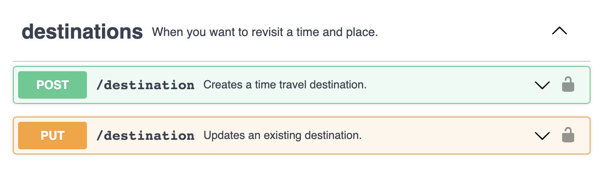
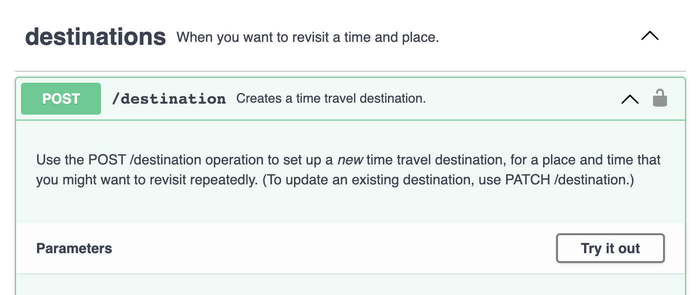

What's missing from your Swagger docs: How to ensure completeness when working with OpenAPI 3
It's easy to assume that the OAS3 spec endows the documentation with more accuracy or completeness, compared to documentation that is not programmatically generated. Not necessarily. Generating docs from an OAS3 spec can have many benefits, but it doesn't improve accuracy or completeness because the spec is ultimately written by humans, and information can be missing or incorrect.
For example:
Lack of a description can leave users unable to figure out how an endpoint works, or even what it does. Descriptions are necessary for: the entire service, collections, each endpoint, each request parameter in an endpoint, and every response property for the endpoint.
The docs can incorrectly state that a parameter is required when it is not (and vice versa).
Docs can tell users that a parameter is a string and not mention that there are only three possible values.
Those are examples that have been encountered in actual Swagger-generated documentation.
Don't assume, therefore, that the OAS3 spec is any more reliable than ordinary documentation or ordinary code: You must verify the correctness and completeness.
For correctness, the only remedy is verifying the reference docs against the actual API. Who tests yours?
The rest of this article, focuses on completeness and how to achieve it in an OAS3 spec.
Provide a description for everything that needs one
Descriptions comprise the most important part of the spec. Documentation calls for effective descriptions and it requires an effort to include the descriptions in every place where one can be included. That might sound like overkill, so I'll elaborate.
When it comes to describing API properties, err on the side of explaining too much, because a reference document is like a dictionary -- you don't have to read the entries that you don't need. But when an entry is completely lacking it stops you cold. Therefore, provide a description for everything.
Don't think that thorough naming will eliminate the need for descriptions. You might think your naming makes the purpose of something evident, but the words you choose for labels will always have different associations for other people. if the description is omitted some readers will become lost or frustrated because they don't understand how the endpoint is supposed to work.
Describe what the entire service does
Include a description at the top of the spec:
swagger: "3.0"
info:
description: "This is the API for your electric flying vehicle . . ."
Describe collections
When grouping operations with tags to unite multiple operations into a collection, include a root-level global tags section (near the top of the document) so that you can include a description for each tag. For example:
swagger: "3.0"
info:
description: "This is the API for your electric flying vehicle . . ."
host: "flying_machine.swagger.io"
basePath: "/v0"
tags:
- name: "destinations"
description: "Save and reuse locations where you might land again later."
- name: "appointments"
description: "Keep track of appointments and automate your travel to and from them, \
so that you can keep your commitments in the order that you want to."
The tags section begins on line six. Each entry includes a tag name and a description.
Provide each operation with both a summary and a description
If an endpoint offers multiple HTTP methods (each being a separate operation), then each of them requires both a summary and a longer description. In docs built by Swagger UI, readers will see the description when they click the operation and expand it. The shorter summary is visible when the operation is not expanded and helps the reader select from all the available operations. Here's an example:
paths:
/destination/:
post:
tags:
- "destinations"
summary: "Create a time travel destination. "
description: "Use the POST /destination operation to set up a _new_ time travel destination, \
for a place and time that you might want to revisit repeatedly. (To update an existing destination, \
use PATCH /destination.)"
The following examples show some output with all the proper descriptions in place.
The example above shows Swagger UI output with proper summaries. Imagine how much harder it would be to use these docs without the summaries. To learn what an endpoint does, you'd have to click it and get to the text inside.
This example shows Swagger UI output with a proper summary and with the longer internal description that's visible only when the entry is expanded.
Provide a description of all the parameters for every request
Include everything users might need to know when utilizing the parameter.
What the parameter does. (The user should understand how changing the value will change the results.)
When and why would the user need to use the attribute?
Provide all the details that are essential to making an API call
Users need more than the description, of course. You might already know about the attributes discussed in the following section, but they're omitted or incorrect frequently enough to be worth mentioning.
Consider this a checklist for your parameters:
Always indicate default values by using
default: <value>.Indicate the data type by using
typeandformat.If there is a limited range of acceptable values, provide them by using
enum.If the parameter is required in order to complete the call, use
required: true
Related OpenAPI 3.0 docs:
- OpenAPI 3.0 Specification
- Operations with tags
- Using enum
- Data types
- Parameters (Includes usage for
requiredanddefaultattributes.)